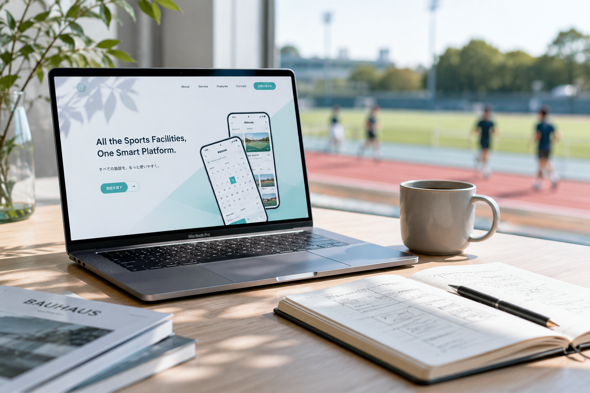

WEB CREATIVE PARTNER
事業を伸ばすWeb導線を、
現場目線で。
スポーツスクール運営の実体験を活かし、
スポーツスクール・整骨院・パーソナルジム・教育事業向けに、
ホームページ制作、LP制作、予約システム、集客導線まで
一貫して支援します。
01
Web
Design
ホームページ / LP制作
事業の魅力が伝わるホームページや、 問い合わせにつながるLPを制作します。 見た目だけでなく、予約・LINE・SNSへの導線まで考えた Webサイトを設計します。

02
Reserve
System
予約システム制作
予約受付・振替・欠席管理・会員管理など、 日々の運営をスムーズにする予約システムを制作します。 現場で使いやすく、管理者にもお客様にもわかりやすい仕組みを整えます。

03
SEO
Support
SEO対策
地域名やサービス名で見つけてもらえるように、 ページ構成・キーワード・ブログ導線を整えます。 長期的に検索から問い合わせにつながるWeb設計を行います。

04
SNS/
Content
SNS・コンテンツ発信支援
Instagram・LINE・ショート動画などを活用し、 認知から問い合わせにつながる発信をサポートします。 ただ投稿するだけでなく、Webサイトや予約導線とつながる形で設計します。

05
Growth
Support
運営改善サポート
公開後の反応を見ながら、 Web・SNS・LINE・予約導線を改善します。 作って終わりではなく、事業の成長に合わせて使いやすい形へ整えていきます。

WORKS / CREATIVE
制作実績 / 制作イメージ
実際の運営経験をもとに、 集客・導線・使いやすさを意識したデザインを制作しています。


ABOUT
現場から、
導線を
考える。
SIEG CREATEは、 スポーツスクール運営の実体験から生まれました。 ホームページを作るだけでは集客できない。 SNSだけ頑張っても問い合わせにつながらない。 予約管理に時間を取られ、本来やるべき仕事に集中できない。 私たち自身が経験してきた課題だからこそ、 現場で本当に役立つ仕組みづくりを大切にしています。 Web制作だけでなく、 集客・予約・運営まで含めて、 事業の成長をサポートします。

現場から生まれた
実際にスポーツスクールを運営し、 集客・保護者対応・予約管理などを 日々行っています。 机上の理論ではなく、 現場で本当に必要な仕組みを考えます。
一緒に成長する
制作会社とお客様ではなく、 事業を成長させるパートナーとして 長く関わることを大切にしています。 小さな改善を積み重ねながら、 成果につながる仕組みを作ります。
成長し続ける
事業もWebサイトも、 完成がゴールではありません。 変化に合わせて改善を重ねながら、 より良い形へ成長させていきます。